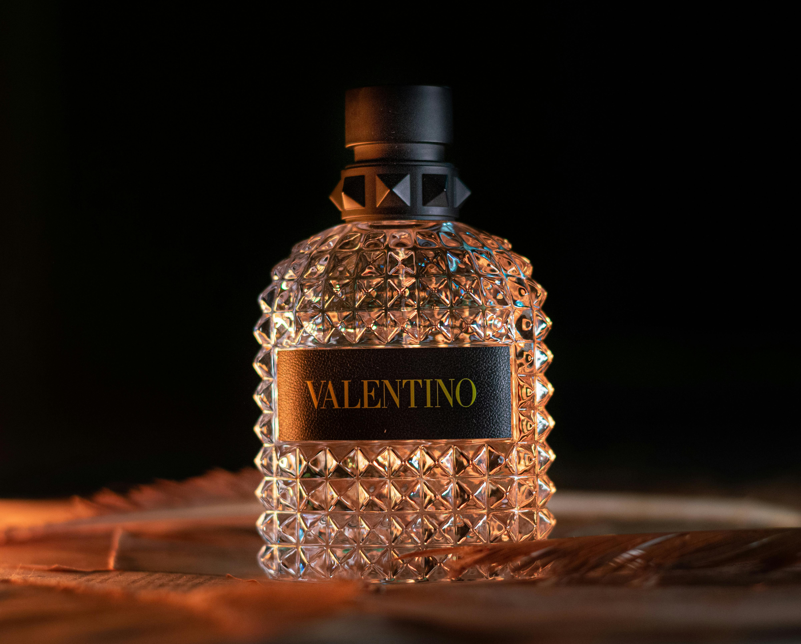

Aftershave
Overall Trending Top 3!
| 1st | 2nd | 3rd |
|---|---|---|
 |
||
| Tom Ford Ombré Leather | Chanel BLEU de CHANEL | YSL 24 rue de l'Université |
Last Months Top 3!
| 1st | 2nd | 3rd |
|---|---|---|
|
||
| Tom Ford Ombré Leather | Dior Sauvage | Calvin Klein CK Be |
Our aftershave watchlist
There is no suprise here when we mention the name Valentino is there? A staple in the fragrance industry with no errors. Valentino Uomo Born in Roma Green Stravaganza is their newest release making it our top priority.
YSL Y For Men is next up for our watchlist as it has been a constant reminder of summer. As summer is soon to be on the horizon, a citrus scent will be our go to and nothing beats YSL Y For Men.
There's no list without the mention of a Jean Paul Gaultier and JPG Le Male Elixir is a scent for the ages. A very close top priority selection.
Finally, an underdog. Abercrombie & Fitch's Fierce. A constant reminder of the 2000's that has no intention of leaving. Derservedly to be ranked highly.